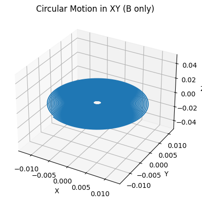
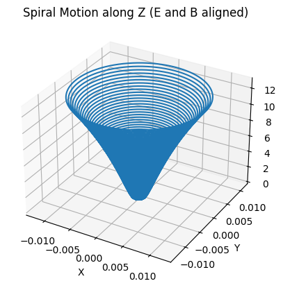
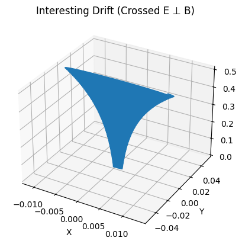
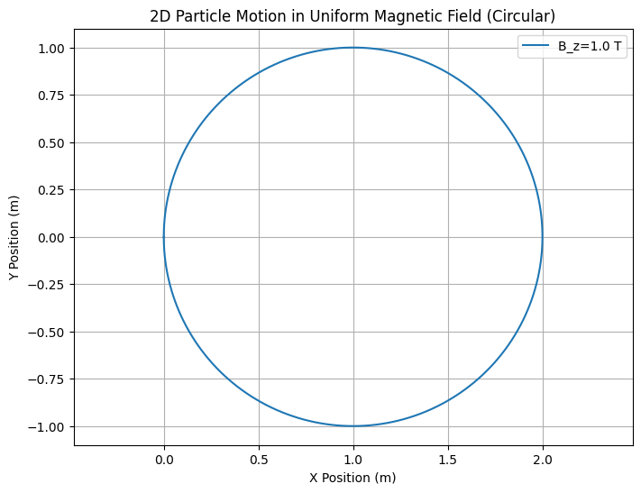
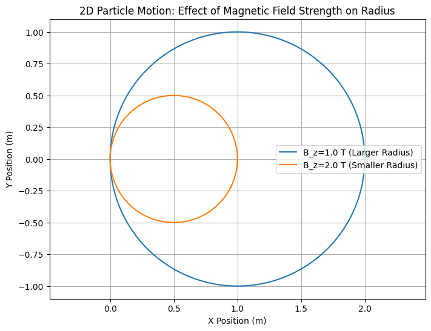
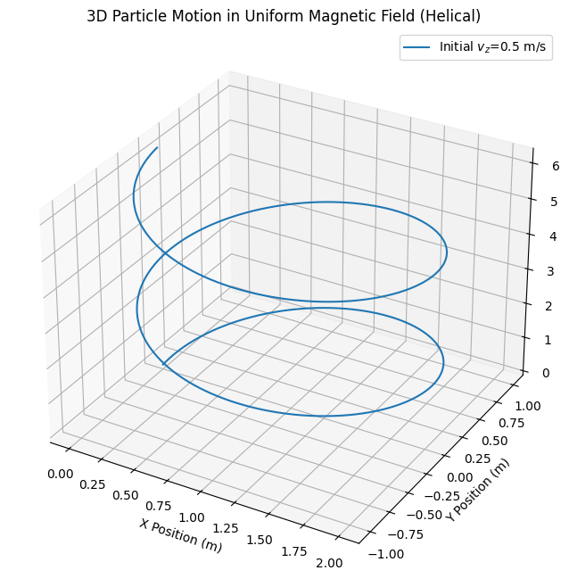
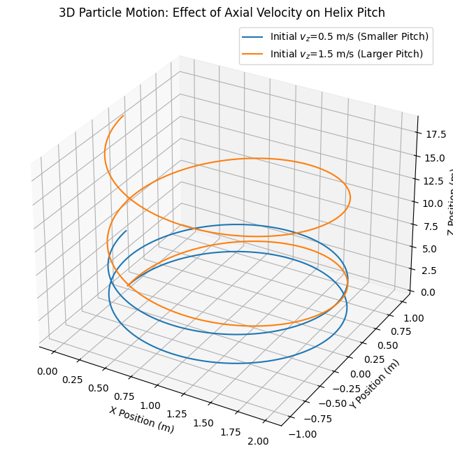
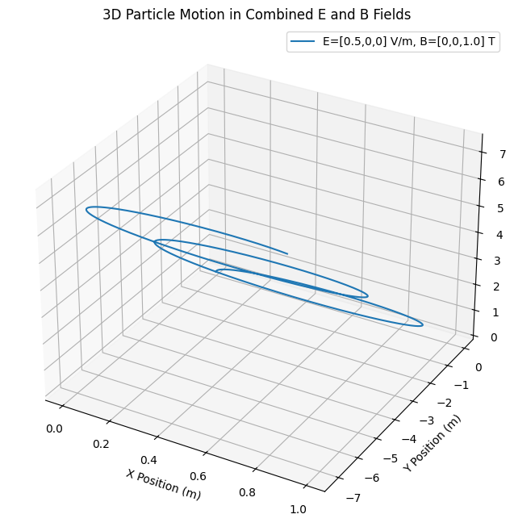
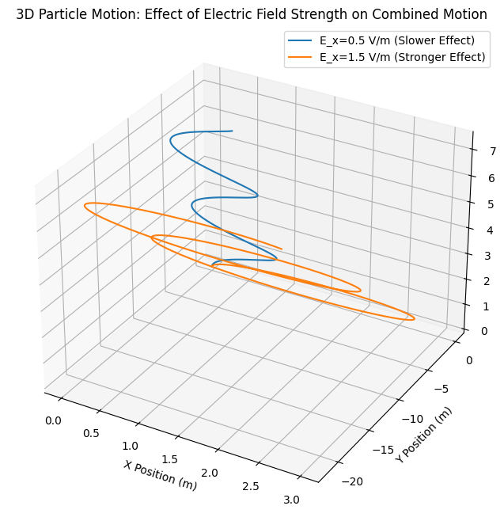

Problem 1
Key Systems Where the Lorentz Force Plays a Crucial Role
The Lorentz force, described by the equation
is central to many physical systems and technologies. It governs the motion of charged particles under the influence of electric (\(\mathbf{E}\)) and magnetic (\(\mathbf{B}\)) fields. Below are some systems where this force is especially critical:
1. Particle Accelerators
In particle accelerators such as synchrotrons and cyclotrons, the Lorentz force is used to steer and accelerate particles.
- Electric fields (\(\mathbf{E}\)) are responsible for accelerating the charged particles.
- Magnetic fields (\(\mathbf{B}\)) are used to bend and focus the particle beams along desired paths.
This interplay enables particles to reach high velocities and collide at controlled points for high-energy physics experiments.
2. Mass Spectrometers
Mass spectrometers use the Lorentz force to separate ions based on their mass-to-charge ratio (\(m/q\)).
- Particles enter a region with a magnetic field \(\mathbf{B}\) and are deflected in circular paths.
- The radius of the path depends on the particle’s velocity, charge, and mass:
$$ r = \frac{mv}{qB} $$
- By measuring this radius, the system identifies and characterizes different ions in a sample.
3. Plasma Confinement in Fusion Reactors
In devices like tokamaks and stellarators, magnetic fields are used to confine high-temperature plasma.
- Charged particles spiral around magnetic field lines due to the \(q\mathbf{v} \times \mathbf{B}\) component.
- Electric fields may be applied to induce additional control or heating.
This confinement is essential to sustain the conditions necessary for nuclear fusion.
Role of Electric and Magnetic Fields
- Electric Field (\(\mathbf{E}\)):
- Directly accelerates charged particles in a straight line.
-
Responsible for energy gain and directional control.
-
Magnetic Field (\(\mathbf{B}\)):
- Does not do work but changes the particle’s direction.
- Causes circular or helical motion, crucial for confinement and steering.
Together, these fields allow precise control over the trajectories, speeds, and energies of charged particles in various applications.



🔍 Parameter Exploration
Explore how varying the electric field (\(\mathbf{E}\)), magnetic field (\(\mathbf{B}\)), initial velocity (\(\mathbf{v}_0\)), and particle charge (\(q\)) and mass (\(m\)) influences the trajectory of a charged particle under the Lorentz force.
💡 Governing Equation
The motion of a charged particle is governed by the Lorentz force:
This force results in acceleration given by Newton's second law:
🔁 Parameters to Vary
| Parameter | Symbol | Description | Effect on Trajectory |
|---|---|---|---|
| Electric field | \(\mathbf{E}\) | Direction and strength of field | Causes linear acceleration along \(\mathbf{E}\) |
| Magnetic field | \(\mathbf{B}\) | Direction and strength of field | Causes circular or helical motion perpendicular to \(\mathbf{B}\) |
| Initial velocity | \(\mathbf{v}_0\) | Starting speed and direction | Determines initial energy and pitch of helical motion |
| Charge | \(q\) | Sign and magnitude of charge | Affects force direction (sign) and magnitude |
| Mass | \(m\) | Inertia of the particle | Higher mass reduces acceleration under same force |
🧪 Observational Outcomes
- Increasing \(|\mathbf{B}|\) tightens the radius of circular motion:
$$ r = \frac{mv_\perp}{qB} $$
-
Increasing \(|\mathbf{E}|\) increases linear acceleration along the field direction.
-
Changing \(q\) sign reverses the direction of gyration or drift.
-
Reducing \(m\) results in quicker response to field changes (higher acceleration).
-
Crossed Fields (\(\mathbf{E} \perp \mathbf{B}\)) lead to drift motion with constant velocity:
$$ \mathbf{v}_{\text{drift}} = \frac{\mathbf{E} \times \mathbf{B}}{B^2} $$
Visualization





